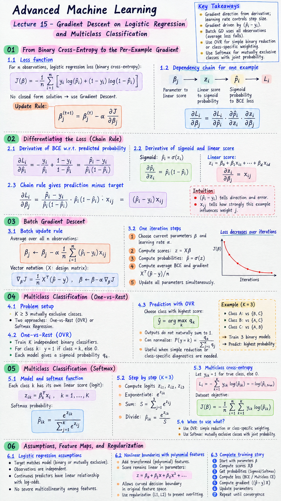

Short Notes & Visual Summary
Core principles and summary cheat-sheet for Lecture 15:

Click image to open full size in a new tab
- Gradient Direction: The derivative supplies direction and steepness; the learning rate controls how far the parameter moves during one update.
- Prediction Minus Target: The gradient is driven by prediction minus target \((\hat{p}_i - y_i)\). The feature value determines how strongly that observation influences a particular weight.
- Batch Updates: Batch Gradient Descent balances all observations, and the average loss falls.
- Multiclass Extensions: Use OVR when a simple binary reduction or class-specific weighting is important. Use Softmax when classes are mutually exclusive and a jointly learned probability distribution is required.
- Continuous Training Story: BCE → Chain Rule → \((\hat{p} - y)\mathbf{x}\) → Batch update → OVR or Softmax → multiclass cross-entropy → assumptions, feature maps, and regularization.
From Binary Cross-Entropy to the Per-Example Gradient
1.1 We Know the Loss, but Not the Parameters
For \(n\) observations, the loss function evaluates a candidate parameter vector, but standard logistic regression has no convenient closed-form normal equation.
Gradient Descent uses the local slope to iteratively update parameters:
$$\beta_j^{(t+1)} = \beta_j^{(t)} - \alpha \frac{\partial J}{\partial \beta_j}$$1.2 Build the Dependency Chain for One Training Example
The visual dependency chain shows that one weight influences the loss through three local links:
- Parameter \(\beta_j\) to Linear score \(z_i\)
- Linear score \(z_i\) to Sigmoid probability \(\hat{p}_i\)
- Sigmoid probability \(\hat{p}_i\) to BCE loss \(L_i\)
Differentiating the Loss (Chain Rule)
2.1 Differentiate BCE With Respect to the Predicted Probability
Holding the observed label \(y_i\) fixed and differentiating the two logarithm terms gives:
$$\frac{\partial L_i}{\partial \hat{p}_i} = -\frac{y_i}{\hat{p}_i} + \frac{1 - y_i}{1 - \hat{p}_i} = \frac{\hat{p}_i - y_i}{\hat{p}_i(1 - \hat{p}_i)}$$2.2 Differentiate the Sigmoid and the Linear Score
The sigmoid derivative is:
$$\frac{\partial \hat{p}_i}{\partial z_i} = \hat{p}_i(1 - \hat{p}_i)$$For the linear score \(z_i = \beta_0 + \beta_1 x_{i1} + \dots + \beta_d x_{id}\), the derivative is \(\frac{\partial z_i}{\partial \beta_j} = x_{ij}\).
2.3 Let the Chain Rule Collapse to Prediction Minus Target
Multiplying the three local derivatives makes the cancellation visible:
$$\frac{\partial L_i}{\partial \beta_j} = \frac{\hat{p}_i - y_i}{\hat{p}_i(1 - \hat{p}_i)} \cdot \hat{p}_i(1 - \hat{p}_i) \cdot x_{ij} = (\hat{p}_i - y_i) x_{ij}$$Batch Gradient Descent
3.1 Move From One Observation to Batch Gradient Descent
Average the per-example losses and their derivatives to get the scalar Batch Gradient Descent update:
$$\beta_j \leftarrow \beta_j - \alpha \frac{1}{n} \sum_{i=1}^n (\hat{p}_i - y_i) x_{ij}$$In vector notation with a design matrix \(X\):
$$\nabla_\beta J = \frac{1}{n} X^T (\mathbf{\hat{p}} - \mathbf{y}), \quad \beta \leftarrow \beta - \alpha \nabla_\beta J$$3.2 Perform One Complete Numerical Update
A single iteration of Batch Gradient Descent involves:
- Choosing current parameters and learning rate \(\alpha\).
- Computing all scores \(\mathbf{z} = X\beta\) and probabilities \(\mathbf{\hat{p}} = \sigma(\mathbf{z})\).
- Computing the average BCE and \(X^T(\mathbf{\hat{p}} - \mathbf{y})/n\).
- Updating all parameters simultaneously.
Extend Logistic Regression to Multiclass Targets (OVR)
4.1 Recognise the Binary Limit and Define Multiclass Classification
In multiclass classification, every observation receives exactly one of \(K \ge 3\) mutually exclusive labels.
Two principled routes to handle this are One-vs-Rest (OVR) (fitting independent binary models) and Multinomial/Softmax Regression (joint class scores).
4.2 Construct the One-vs-Rest Training Problems
OVR transforms the original \(K\)-class target into \(K\) independent binary classification problems. For each class, the binary model predicts whether an observation belongs to that class (1) or any other class (0).
4.3 Use OVR Models for Prediction Carefully
Because OVR trains \(K\) independent models, the resulting sigmoid outputs will not naturally sum to 1. For a mutually exclusive prediction, you select the class with the highest score (or probability).
$$\hat{y} = \arg\max_k q_k$$Normalising the outputs ensures they form a valid probability distribution by dividing by their sum.
Build One Joint Multiclass Model With Softmax
5.1 Build One Joint Multiclass Model With Softmax
In Softmax Regression, each class \(k\) receives its own linear score (logit):
$$z_{ik} = \beta_k^T \mathbf{x}_i, \quad k = 1, \dots, K$$The softmax function exponentiates and normalises all logits together to produce a coherent probability distribution:
$$\hat{p}_{ik} = \frac{e^{z_{ik}}}{\sum_{j=1}^K e^{z_{ij}}}$$5.2 Compute Softmax Probabilities Step by Step
Given logits for different classes, exponentiate each logit \(e^{z_k}\), calculate the sum, and divide each exponentiated logit by the total sum to find the softmax probability.
5.3 Derive Multiclass Cross-Entropy From One-Hot Labels
Let \(y_{ik} = 1\) for the true class and 0 for others. The per-example loss simplifies to:
$$L_i = -\sum_{k=1}^K y_{ik} \log(\hat{p}_{ik}) = -\log(\hat{p}_{i, \text{true}})$$The dataset objective is the negative average log-likelihood of a categorical target distribution:
$$J(B) = -\frac{1}{n} \sum_{i=1}^n \sum_{k=1}^K y_{ik} \log(\hat{p}_{ik})$$5.4 Choose Between OVR and Multinomial Logistic Regression
Use OVR when a simple binary reduction or class-specific diagnostics are required.
Use Softmax when classes are mutually exclusive and a jointly learned probability distribution is needed.
Assumptions, Feature Maps, and Regularization
6.1 Logistic-Regression Assumptions: Odds and Log-Odds
Key assumptions:
- Target matches the model (binary or mutually exclusive).
- Observations are independent.
- Continuous predictors have a linear relationship with the log-odds.
- No severe multicollinearity among independent variables.
6.2 Create Nonlinear Boundaries With Polynomial Features
Adding transformed (polynomial) features keeps the score linear in parameters while permitting a curved decision boundary in the original feature space.
Regularization (L1, L2) is critical to control the increased flexibility and shrink unnecessary coefficients.
6.3 End the Lecture as One Continuous Training Story
The process follows a continuous loop:
Start parameters → Scores (\(X\beta\)) → Probabilities (Sigmoid/Softmax) → Loss (BCE/Multiclass CE) → Gradient \(((\hat{p} - y)X)\) → Update parameters.
Original PDF Notes
Below is the original PDF document for your reference: